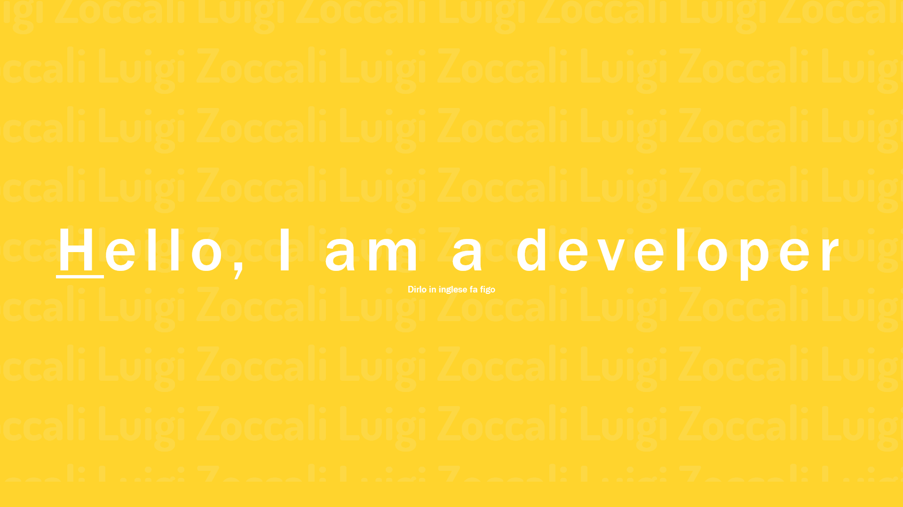

Portfolio

- Maggio 2021 -
Non credo di dover spiegare che cosa sia questo progetto, ci sei letteralmente dentro.
Non sapevo che cosa fare e quindi sono andato su Adobe XD, ho ideato la grafica del sito e poi in circa 1 settimana ho realizzato il sito.